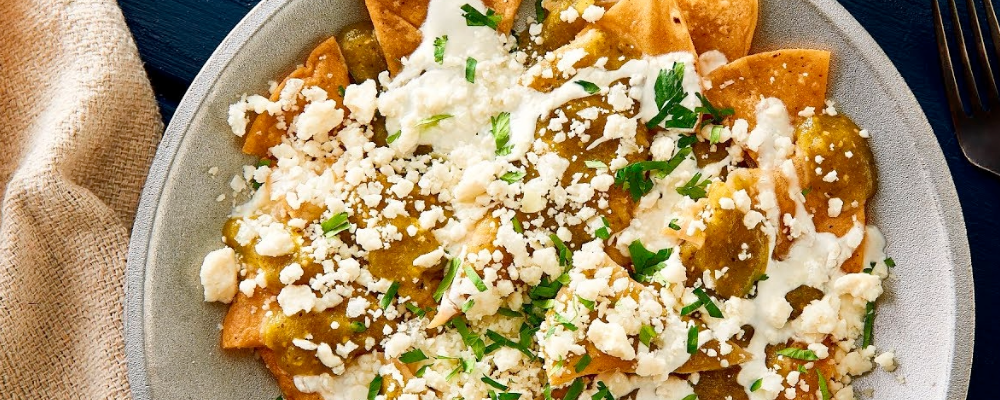

Chilaquiles
Fried
Description
Chilaquiles are a vibrant Mexican dish featuring fried tortilla strips soaked in flavorful salsa, topped with cheese, crema, and often served with eggs or shredded chicken. A delightful blend of crispy, savory, and spicy flavors.
Ingredients
- Tortilla chips
- Salsa (red or green)
- Cooking oil
- Eggs
- Queso fresco
- Onions (chopped)
- Avocado (sliced)
- Salt and pepper
Steps
- Cut tortillas into triangular pieces
- Fry tortillas in a cooking oil until they become crispy and golden brown
- In the same pan, pour red or green salsa. Cook for a few minutes
- Add onions to the pan and toss thoroughly
- Season to taste and toss again